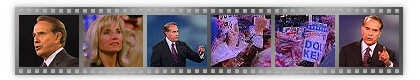

Elizabeth Dole 1
or 2 | Better
Man for a Better America | Furthering
America
Helping Every American | American Economics
Elizabeth Dole
The truth.
Always the truth.
My husband is a plain-spoken man from the heart of America,
Russell, Kansas. In Russell, you say what you're going to do
and you do it. The truth. First. Last. Always the truth. When
Bob Dole says he'll cut your taxes 15 percent, he'll cut your
taxes 15 percent. This is Bob Dole. He's a workhorse, not a
showhorse. And he knows whose money it really is... your
family's.
Elizabeth Dole
Honesty, doing what's right,
living up to his word.
My husband has come out strongly to protect the victims of
domestic violence, and to make sure a man and woman who work at
the same job get the same retirement benefits. Bob gets it
done, not for the credit, but because it's right. And when Bob
says he'll cut taxes fifteen percent for families, you can
count on it, because it's right for America. And Bob Dole
doesn't make promises he can't keep.
Bob
Dole - The Better Man for a Better America
The stakes for America are enormous.
These times demand a real leader.
His parents instilled values in him, like love of God, love of
country, love of family, honesty. In an era of too much
salesmanship and too much smooth talking, Bob Dole is a
plain-spoken man. It was here that Bob Dole first developed
strength of character and strong values. I remember in our
household when you didn't tell the truth my mother she would,
well she would find a bar of soap. He put aside his dream of
becoming a doctor and, instead, answered his country's call to
duty... and was severely wounded. It was about 11 months I
think before I could feed myself... The fact that I've had a
problem, a serious problem, and I didn't give up, and I
overcame it and I was successful. Bob Dole knows what it takes
to help Americans fight back. You've got to challenge young
people. They've gotta learn from failure. There is a moral
crisis in America. Drug use is up. The wrong messages are being
sent to our youth. Americans do have a stake in this election.
It's about our America. It's not my America. It's your America.
It's what do I want for my kids. I want young people to have
the same challenges and the same opportunities, and succeed as
I did. And it's about families getting ahead. You shouldn't
have to apologize for wanting to keep what you earn. It's your
money.
Bob Dole is the candidate most qualified by virtue of his
beliefs, his character and competence to be the next President
of the United States of America. Bob Dole. The only man who
will restore the American dream.
The Better Man for a Better America.
Bob
Dole - Economics and Furthering America
The stakes this election?
Keeping more of what you earn. That's what Bob Dole's tax cut
plan is all about. The Dole plan starts with a 15% tax cut for
working Americans.. That's $1,600 more for the typical family.
A $500 per child tax credit. Education and job training
incentives... Replacing the IRS with a fairer and simpler tax
system... And a Balanced Budget Amendment to stop wasteful
spending.
The Dole Plan. Helping you keep more of what you
earn.
Bob Dole -
Economic Plan to Help Every American

We Can Do Better
Under Clinton... Stagnant wages. The largest tax increase in
history. Two incomes needed to make ends meet. Americans
deserve better. Dole: Make no mistake about it. My economic
program is the right policy for America.
The Dole Plan - Cut wasteful spending. Balance the budget. A
tax cut of $1600 for the typical family. You shouldn't have to
apologize for wanting to keep what you earn. It's your
money.
Bob Dole. The Better Man for a Better America.
Bob
Dole - Economics and Furthering America
Today, taxes are the highest in American
history...
Bill Clinton says we have the healthiest economy in "three
decades."
Believe that? America can do better. Bob Dole. Jack Kemp.
Cutting income taxes on every family 15%. A 500 dollar per
child tax credit.
Higher take home pay. Bob Dole. Cut taxes. Balance the budget.
Raise take home pay. Tell the truth.
Bob Dole. The Better Man. For a Better America.

More opportunities. Smaller government. Stronger and safer families
Homepage | Register | Volunteers | Donations
About the Team | Dole Interactive | Newsroom | The Dole Agenda | On the Campaign Trail | Get Involved
Originally Paid for by Dole Kemp '96 Campaign Committee
Original Web Design by Presage Internet Campaigns
To Learn more about Bob Dole, Please Visit the Dole Institute
This Web Site is Presented for Educational Purposes by 4President.org